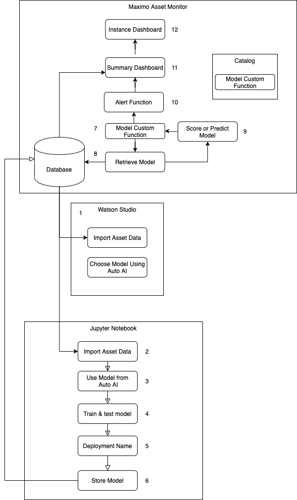
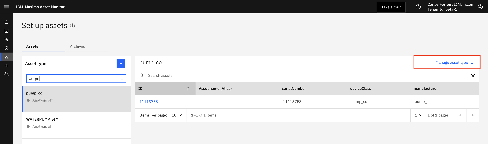
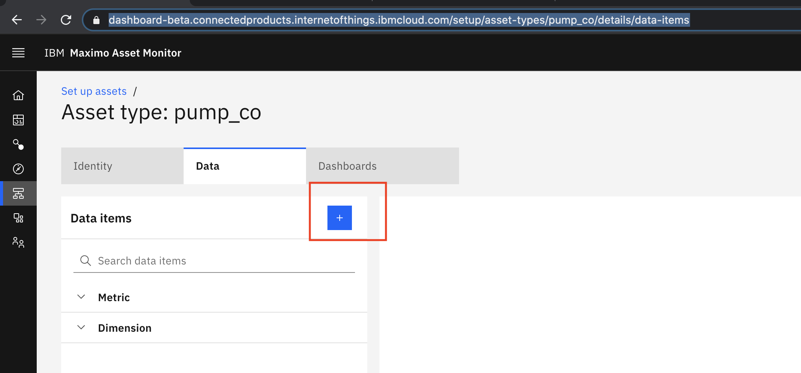
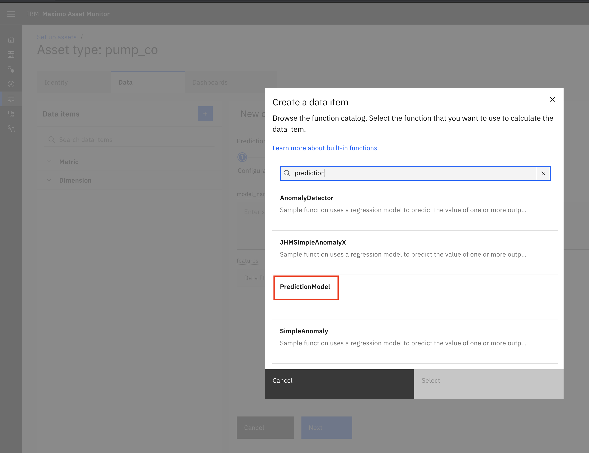
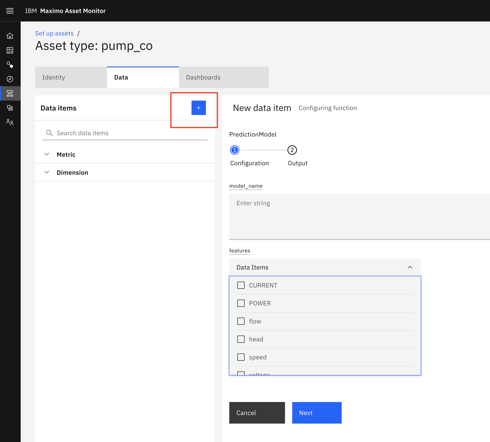
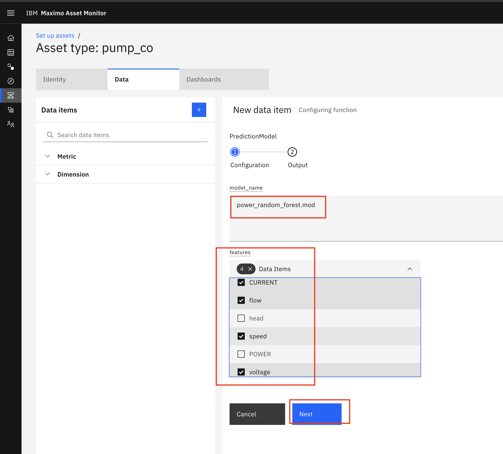
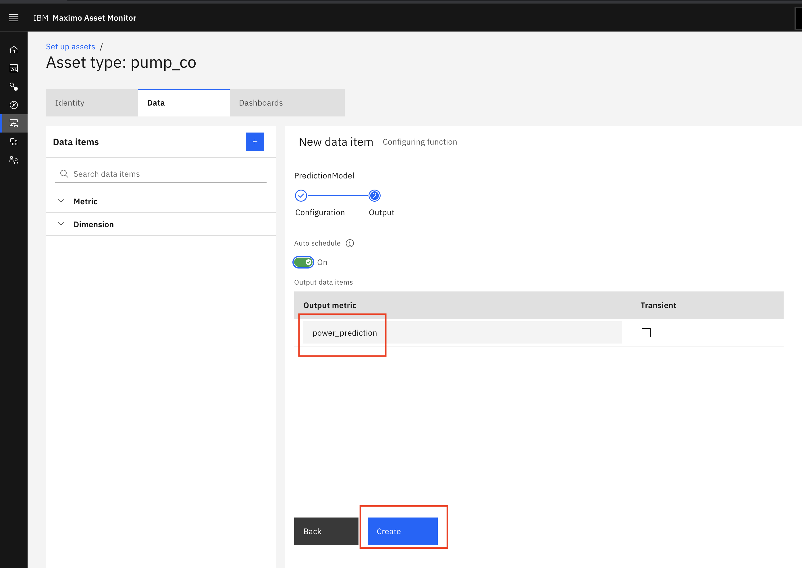
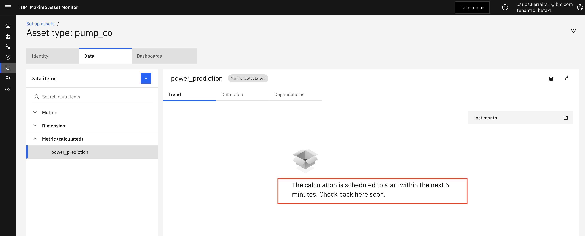

Deploy and Configure a PredictionModel Custom Function in Monitor
Note
Skip steps 1, 2, 3, 4 and 5 if you are in the Think2021 Hands on Lab session. These steps have already been done for you.
In this exercise you deploy a Monitor Custom Function to call the Prediction Model to make prediction. Custom Functions are stored in Github Repositories. Functions must be added to an Asset Type and scheduled in a pipeline to run.
Here is the Architecture flow for this tutorial. 
-
In order for Maximo Monitor pipeline to access private Github repositories you must create a token. Login to Github.
-
Create a personal access token for your custom function repository using these instructions
-
Append the token to the URL in
function.pySee the already updated URL for the custom function to call thePredictionModelin theai_prediction/functions.pyPACKAGE_URL = 'git+https://yourtoken@github.com/yourgithub/maximo_autoai.git' -
Save and commit the changes to the github repo.
git add ./custom/functions.py git commit -m "my function changes" git push origin master -
Custom Functions are stored in Github Repositories. They are added to a Monitor catalog by registering them. Register the function using this script.
python3 ./scripts/register_RredictionModel_function.py -
After registering the function in Monitor, you can add the
PredictionModelcustom function from the catalog topump_coAsset Type. This will enable the function to run every 5 minutes and make a prediction using latest meter readings. Navigate to theSetupmenu. Search for and pick thepump_coasset type and click on theSetup Asset TypeLink  -
Click the
+icon to add a data item function as a calculated metric to your Asset Type.  -
Search for the
PredictionModelfunction.  -
Set the value for the
Model Nameto the one you used in the earlier exercise Deploy and Configure a Prediction Model Custom Function in Monitor that includes your initials.modelname = power_random_forest_yourinitials.modEach Asset can have multiple associatedmetricswhich track sensor readings over time. Since the model you created requiresspeed,flow,voltage,CURRENTto predictPOWERSelect the those as input metrics to the function. Click theNextbutton.   -
Set the name of the
Output metricname topower_predictionThis will have the predicted power value returned from your Model invoked by your PredictionModel custom function.  -
The pipeline is scheduled to run ever 5 mins by default. You must wait five minute for the pipeline to execute and calculate your
